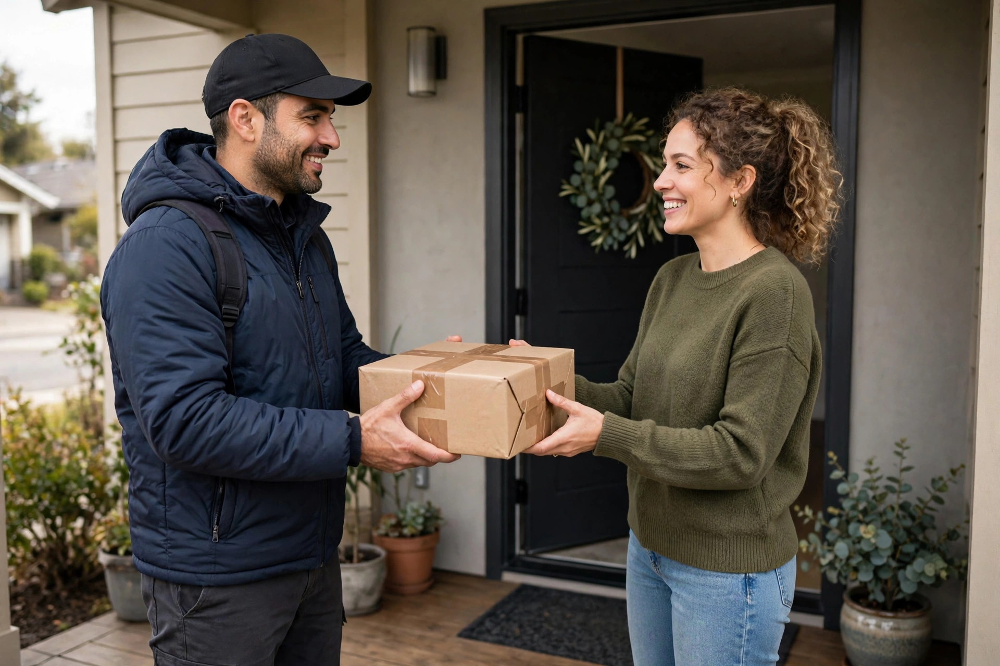

Confirm the Order Straight Away
A quick order confirmation is the first reassurance a customer needs. As soon as an order is received, confirm what was ordered, the quantity, the delivery address and the expected next step. This gives the customer a chance to spot a mistake early, such as a wrong size or address, before the parcel is packed and sent. A confirmation also proves that the order was received, which removes the most common early worry: whether the payment or message went through at all. A short message at the right time often prevents several worried messages later.
Keep the confirmation short, clear and polite, and send it through the same channel the customer used to order where possible. Avoid adding unrelated offers or long instructions at this stage, because the customer mainly wants to know that the order is safe. If a product needs to be prepared or packed first, say so in simple words and give a realistic idea of when it will be dispatched. A clear confirmation sets a calm tone for the whole delivery process. Customers appreciate honesty far more than silence, especially when a delivery is late.
Explain the Next Steps in Plain Words
After confirmation, customers want to know what happens next and when. Explain the steps in plain order: packing, handing over to delivery, transit, and arrival. You do not need to share every internal detail, but a simple outline helps customers understand why there may be a wait. For example, if an order is packed the next working day and then handed to a courier, saying so prevents the customer from expecting same-day delivery when that was never promised. Keeping update wording simple helps customers understand the stage without confusion.
It also helps to explain what the customer should do at each stage, if anything. Should they keep their phone nearby for a delivery call, check an address, or prepare payment on delivery where that applies? Clear instructions reduce missed deliveries and confusion at the door. When customers know what to expect, they are more patient, because the wait feels planned rather than uncertain. Honest, simple explanations are far more useful than vague promises that create false expectations. Good updates also protect the seller, by creating a clear record of what was shared.
Give Updates When the Order Moves
A short update each time the order moves forward keeps the customer informed without overwhelming them. Useful updates include dispatch, arrival at a delivery hub where known, out for delivery, and successful delivery. Each message should be brief and factual, with the order details the customer needs to recognise it. Avoid sending the same update twice, and avoid long messages that bury the main point. One clear line about the current stage is usually enough.
If tracking is available, share it simply and explain how to use it in one sentence. If tracking is not available, a short message saying the parcel has been dispatched and when delivery is expected is still very helpful. The key is regularity: customers should not have to ask for an update before receiving one. When updates arrive before questions do, the customer feels looked after, and the seller spends less time answering the same worried message from many different buyers.
Be Honest Quickly When There Is a Delay
Delays happen for many reasons, including weather, courier problems, stock issues or busy periods. What damages trust is not the delay itself, but silence about it. As soon as a delay is known, inform the customer honestly, explain the reason in simple words, and give a new realistic estimate or the next time an update will follow. Avoid blaming others at length or making a new promise that cannot be kept. A short, honest message is usually accepted with understanding.
Also give the customer a clear choice where one exists, such as waiting for the revised delivery, changing an item, or cancelling where that is possible. Choice shows respect and reduces frustration, because the customer is not left feeling powerless. After the delay message, follow up at the promised time, even if the news has not changed. A follow-up that says the order is still being followed up is better than no message at all, because it shows the order has not been forgotten.
Check In After Delivery Without Being Pushy
After delivery, a short polite message to confirm arrival is a good final step. Ask whether the parcel arrived in good condition and whether the customer needs any help with the product. Keep this message brief and do not push another sale in the same message. The purpose is to close the order properly and give the customer a chance to raise a problem early, while it is still easy to fix. Many small issues are resolved quickly when they are raised at this stage.
This after-delivery check also builds the relationship for future orders. A customer who felt informed from confirmation to delivery is more likely to order again and to recommend the seller to others. If the customer replies with thanks or a question, answer politely and promptly. If there is no reply, do not keep sending repeated messages. One respectful check is enough. Good communication after delivery turns a single transaction into a positive experience that the customer remembers.

Keep a Simple System for Order Updates
Good communication is easier with a simple system. Keep a short list of orders, their current stage, and the last update sent to each customer. Update the list when an order moves, and check it once or twice a day for orders that need a new message. This does not require expensive software. A notebook, a simple sheet or a basic phone list can work well for a small business, as long as it is checked regularly and kept up to date.
A simple system also helps when more than one person handles orders. Everyone can see the same stage and give the same answer if a customer asks, which avoids confusion and conflicting information. Over time, the system reveals useful patterns, such as stages where delays happen most often. Fixing those stages improves both delivery and communication. A small business that keeps its order updates organised appears reliable, even before the customer has received the parcel.
Frequently Asked Questions
How soon should a seller confirm an order?
Straight away, with the items, quantity, address and next step, so the customer knows the order was received and can spot any mistake early.
How often should a customer receive delivery updates?
At each main stage, such as dispatch, out for delivery and delivery, with short factual messages rather than repeated or overly long updates.
What should a seller do if delivery is delayed?
Inform the customer quickly and honestly, explain the reason simply, give a realistic new estimate and follow up at the promised time.
How can Zaheer Seo Expert help an online business keep customers informed?
Zaheer Seo Expert, based in Layyah and open 24 hours, can help an online business present clear ordering and contact information online so customers can reach it easily. Call 0327 7350830 or email seozaheer14@gmail.com for help.
Want More Customers From Google?
Call 0327 7350830 or email seozaheer14@gmail.com. Zaheer Seo Expert, Layyah - Rajan Shah Road, Rana Nagar, Chak 116 TDA, Pakistan. Open 24 hours.
Get Your SEO Strategy →